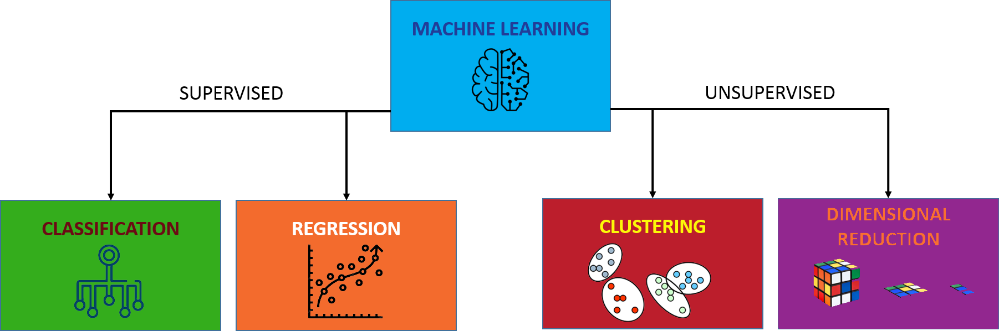

Generating Value Through Actionable Insights
Analytics is the art of converting data into information with the power to transform how your business operates.
These capabilities can be categorised as:
- Descriptive - Generally delivered through a dashboard, descriptive analytics enable you report on what has happened.
- Diagnostic - Leveraging statistical analysis diagnostics enable you to better understand the root cause of an event.
- Predictive - Predictive analytics uses historic data to forecast what is likely to occur in the future.
- Prescriptive - Taking this a step further, prescriptive analytics suggest the optimal action to be taken to achieve a desired outcome.
- Cognitive - Taking the human out of the loop, cognitive analytics learn what actions to take to achieve a stated objective based on defined reward mechanism.

Explore how EMPEDATA use analytical tools to deliver actionable insight in the sections below or, get in touch to arrange a private discussion to discover how we can support you and your analytical needs.
Business intelligence
Typically used for more straightforward querying and reporting of data, business intelligence tools combine data from a broad range of sources to report business metrics via intuitive dashboards. These professional looking reports, that can be generated with little, or no, knowledge of coding provide a great way to enable data driven decision making across your organisation and democratise your analytical capabilities. Popular business intelligence solutions include Microsoft's PowerBI and Tableau produced by Salesforce.
Mathematical modelling
Mathematical modelling covers a variety of techniques, all of which are fundamentally about building a representation of the provided data with which to conduct analysis and infer relationships between variables. The 5 key mathematical modelling disciplines we consider are:
- Mixed Integer Linear Programming (MILP) - By defining the variables, constraints and objective function of a problem the MILP algorithms identify the optimum solution for a given problem. The Gurobi web site provides some fascinating case studies where MILP has been used to great effect and, at a significant cost, is probably the most capable optimisation software available. Open-source Python alternatives such as Pyomo and Scipy can provide similar capabilities, without the expense.
- Econometrics - The goal of econometrics is to understand cause-effect and statistical significance of relationships, often within the scope of policy evaluation. This information is invaluable when seeking to support recommended actions with empirical evidence. Our preferred Python library when performing econometric analysis is statsmodels
- Network Analytics - Networks, or graphs, provide a way to infer the level of connectivity and influence between objects. Examples of these objects include, people, companies in a supply chain and transport networks as exploited by the Google search engine, Facebook social network and various satnav route planning services. NetworkX is an intuitive Python package with which to create and study networks but for larger scale analysis a dedicated Graph database, such as neo4j, provide significant performance benefits.
- Time series analysis - Involves using ARIMA and ETS techniques to project forward the observed seasonality and underlying trends in a dataset to predict future events. Again, our preferred Python library for performing this type of analysis is statsmodels.
- Discreet Event Simulation - Sometimes the best way to understand a phenomenon is to build a simulation. Running the simulation with a range of statistically controlled input parameters and performing a Montecarlo analysis to determine the likelihood of a variety of outcomes. Once understood optimisation algorithms can be applied to select the best mitigating actions to be taken. Simpy is a popular Python simulation library, although we generally prefer developing custom objects and generator functions to define a simulation environment and behaviours of actors within it.
Machine learning techniques
Machine learning algorithms are used to predict an output value or classify an object based on the provided input variables. In contrast with mathematical modelling machine learning focuses on making the best fit, not in understanding the underlying causality. The main Python library for machine learning is Sci-kit learn, which enables a wide variety of machine learning algorithms to be trained and fitted to a given dataset, as well as providing pre-processing techniques and methods for comparing and validating parameters to simplify the process of selecting the model that gives the best results.
As shown in the above diagram, machine learning algorithms can be divided into 4 distinct categories.
Supervised learning - Covers models in which a labelled datasets is used to train algorithms to either classify or predict output values of a given dataset. As input data is fed into the model an error function serves to evaluate the quality of the model prediction and adjusts the weights accordingly to reduce the discrepancy. The algorithm then repeats this evaluation and optimisation process, updating weights until an accuracy threshold has been satisfied. Once derived, these model weights can then be applied to a previously unseen dataset to allow output predictions to be made.- Classification - These algorithms are used to identify which category an object belongs to. Commonly used techniques include Support vector machines, logistic regression, nearest neighbours and random forest.
- Regression- In contrast regression algorithms predict a specific value based on the provided inputs.
- Clustering - Automatically sorting similar objects into sets for applications such as customer segmentation using algorithms such as K-Means and spectral clustering
- Dimension reduction - Reducing the number of random variables enables complex multidimensional data to be more easily visualised and reduces the computational cost of processing. This approach forms the basis of collaborative filtering algorithms, used extensively in recommendation engine.
Deep learning techniques
An artificial neural network (ANN) uses multiple layers between the inputs and outputs of a model to enable more complex relationships to be inferred. While ANN's can be applied to all types of dataset, they truly excel when modelling complex entities such as images, sound and language, where the significance of a piece of data is a function of the datapoints around it. Popular libraries for implementing deep learning models include Tensorflow, developed by Google and Pytorch from Facebook.

The four main types of ANN we consider are:
- Convolutional Neural Networks - Used extensively for image processing a CNN is able to reduce an image into a form suitable for processing, without losing features which are critical for obtaining a good prediction. Passing the image through a range of filters and aggregating the values assigned to cells enables low-level features such as edges, colour, gradient and orientation to be captured. These low-level features are then combined in subsequent layers to obtain a high-level understanding of the image content.
- Recurrent Neural Networks - Analyse sequences of data and are used extensively for language processing and applications to interpret streamed IOT sensor data. Pretrained libraries such as Spacy provide powerful pretrained models that can be used to identify different parts of speech, sentiment and word similarity directly of a given piece of text.
- Reinforcement Learning - Is a behavioural machine learning model that, instead of being trained using sample data, learns to maximise reward through experimentation. As the algorithm progressively learns the sequence of behaviours that return the most successful outcomes it devises a policy to deliver the optimal responce to a given situation.
- Generative Adversarial Networks - Discover and learn the regularities or patterns in input data in such a way that the model can be used to generate new examples that plausibly could have been drawn from the original dataset. This technique has been used to translate photographs across domains, such as day to night or summer to winter, generate high-resolution versions of input images or even create new music, images and texts in the style of a particular artist.
Capability Demonstration Package
We know every business needs to see return on investment and it is therefore essential to demonstrate that your digital transformation can deliver value fast! The EMPEDATA capability demonstration package is the perfect way to get started. Delivered over 4 weeks this affordable package will provide a key capability to your business, which can then be used as a catalyst to launch your wider digital transformation aspirations.
- Week 1 - Working closely with you to scope a business opportunity, identify potential data sources and document an agreed set of success criteria.
- Week 2 - Collating, cleaning and processing the available data into a format suitable for analysis
- Week 3 - Develop the analytical models that provide actionable insight.
- Week 4 - Finalise models, enhance visualisations, document and present the work performed.